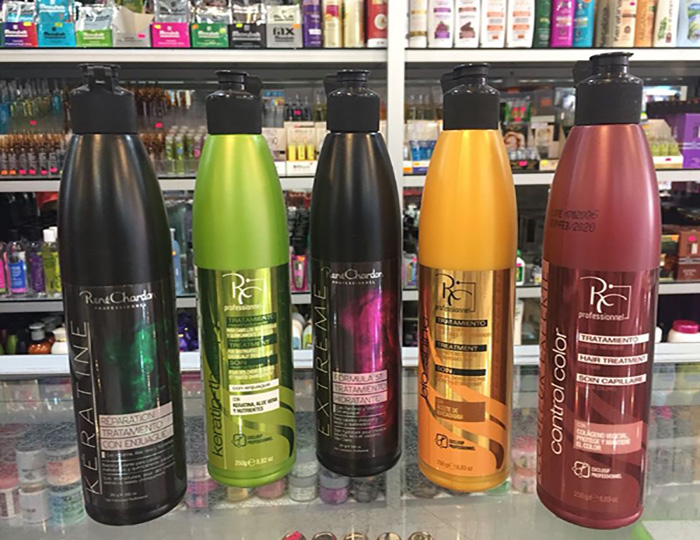
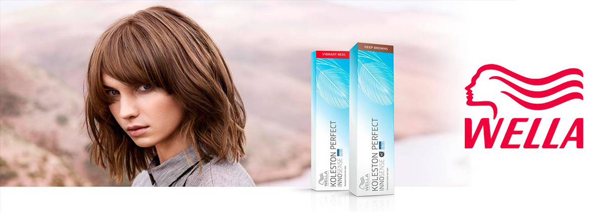
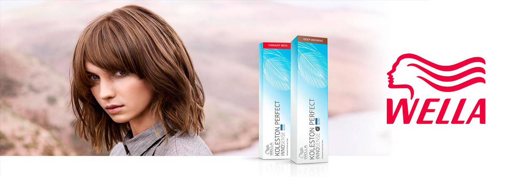

Cabello tinturado: Consejos para mantenerlo hermoso
Cambiar de color nuestro pelo, hacer unas mechas o free style sigue siendo tendencia. Pero al aplicar
tintura debes tener ciertos cuidados para que el pelo no se dañe.
Productos “Lo más recomendable es utilizar champús libres de sulfatos, es decir libres de sal. Se trata de
productos muchos más suaves que los tradicionales. No le hace daño al pelo y además cuidan el color”,
explica Carla.
Otros de sus consejos para los tonos rojizos o cobre es ocupar champús que tienen pigmentos incluidos,
los que se utilizan para que el color no se destiña ni se vea oxidado. “Lo que hacen estos productos es
reforzar el color. Casi siempre se usan para los colores más rojos. En el caso de las personas que se
han hecho mechas también se recomiendan”.
Shampoo René Chardon

Kit Reparador Hidratante
Shampoo Recamier
Shampoo/Acondiconador libres de sulfato
Shampoo sin sulfatos
Wella Element
Humectar el cabello Cuidar la humectación del pelo es lo que debe hacer una persona que se lo ha teñido
sistemáticamente, pues es muy posible que las puntas estén resecas. “Es muy importante el champú que
utilicen, además un acondicionador. También se recomienda usar una mascarilla de protección del
color que sea hidratante. Una buena opción son las con aceite de argán o manteca de karité, que se
pueden encontrar en harta partes y ayudar a mantener la humedad y el color”, sugiere la experta en
color.
Carla también recomienda el aceite de argán antes o después de seca el pelo, producto que contiene
nutrientes, a diferencia de la silicona que sólo aporta brillo. Pero advierte que hay que tener
cuidado con aplicar mucho producto pues esto puede saturar el cabello, “hay que tener cuidado con lo
que uno utiliza porque en ocasiones pueden ser productos muy pesadas y lo pueden dejar opaco en vez
de brillante”. Recuerda que este aceite debes aplicarlo solo en las puntas.
Shampoo Humectante Wella Enrich
Linea Wella Enrich Shampoo/Acondicionador
Mascarilla Capilar Recamier
Línea Teknia de Lakmé Hidratante
Mascaera Capilar Hidratante Lakme
Kinoé Acondicionador Colágeno
Silicona Rene Chardon 60ml
Tecnicas de Coloración
Balayage
Esta es la técnica de coloración del momento, y no se puede esperar más, pues el efecto que crea en
el
cabello es impactante, estilizado y muy natural. Además, se adapta increíblemente bien a las todos
los
tonos: rubio, pelirrojo, castaño y negro.
El balayage es un procedimiento desarrollado por estilistas franceses y consiste en pintar el
cabello
libremente con un cepillo, de ahí que su significado sea literalmente barrer o peinar. El método
original consiste en teñir mechones con un movimiento similar al de barrer, con el fin de mezclar
los
colores individuales, dejando como resultado un estilo lleno de vida.
Actualmente, estilistas de todas partes han implementado esta técnica de maneras diferentes,
desarrollando una gran variedad de estilos con resultados igual de increíbles.
Flamboyage
El Flamboyage es una técnica derivada del balayage, pero esta tiene como intención generar
un look más natural, es ideal si no deseas generar mayor daño a tu melena. Lo recomendado
para este procedimiento es utilizar un tinte sin amoniaco, así reduces la carga de químicos
en tu cuero cabelludo
Ombré
El ombré y el balayage son técnicas de coloración que suelen confundirse, sin embargo, son
completamente
diferentes, desde el procedimiento hasta los resultados. El ombré busca un efecto más dramático,
pues el
contraste que se genera en ambos tonos es más pronunciado –la palabra ombré, en francés, significa
dos
tonos– y dentro de sus principales ventajas está el poco mantenimiento y retoque que requiere.
 
